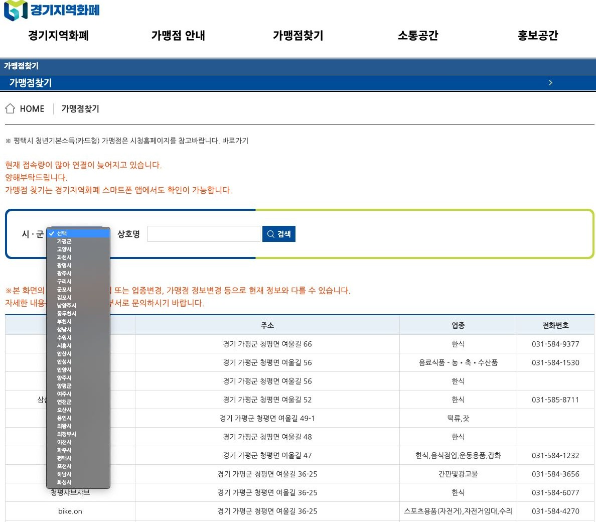
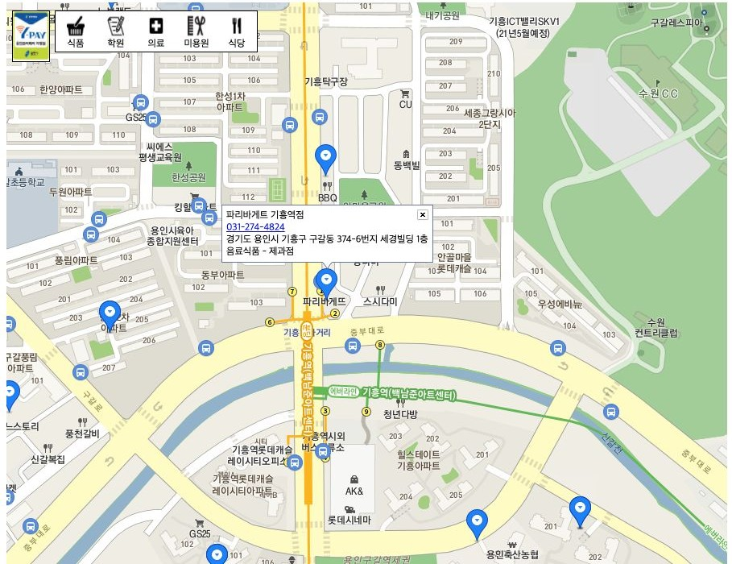
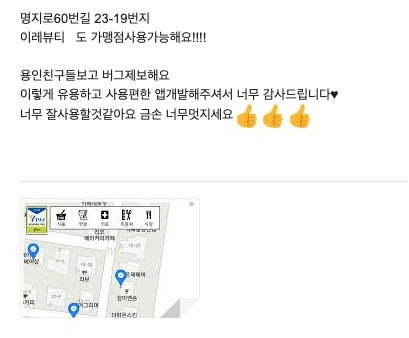

어디서 쓸 수 있는지
알기 어려웠습니다
2020년 4월, 경기도가 재난기본소득을 지역화폐로 지급했습니다. 가맹점은 공식 사이트에서만 확인할 수 있었습니다.
- 시·군을 고르고 상호명을 입력해야 검색이 됩니다
- 결과가 표라서 내 주변에 무엇이 있는지 보이지 않습니다
- 접속 폭주로 "연결이 늦어지고 있습니다" 안내가 떠 있었습니다
개인 프로젝트, 2020년 4월
재난 화폐, 지도에서 바로 찾기
2020년 4월, 경기도가 재난기본소득을 지역화폐로 지급했습니다. 가맹점은 공식 사이트에서만 확인할 수 있었습니다.


y-pay.site. 용인시 가맹점을 지도에 올렸습니다.
핵심은 빨리 내놓는 것이었습니다. 지급 첫 주 안에 나와야 의미가 있었습니다.
data.go.kr 가맹점 데이터를 받아 JSON으로 변환
index.html 한 장과 지도 API. 프레임워크 없음
저장소에 올리면 끝. 무료, HTTPS 기본
y-pay.site 구매 후 A 레코드와 CNAME 설정
2020년 4월 18일부터 23일까지, Google Analytics 기준
"이렇게 유용하고 사용 편한 앱 개발해주셔서 너무 감사드립니다. 용인 친구들 보고 버그 제보해요."
사용자 메일. 누락된 가맹점 주소를 함께 보내 주셨습니다.

배운 것
코드 몇 줄이 남들에게
도움을 줄 수 있는 즐거움이 있다.
용인시 한 곳에서 경기도 전역으로 넓힌 경기지역화폐 지도 g-pay.info를 이어서 만들었습니다.
재난기본소득 사용 기간이 끝나 두 서비스는 종료했습니다. 만든 사람: 고재성